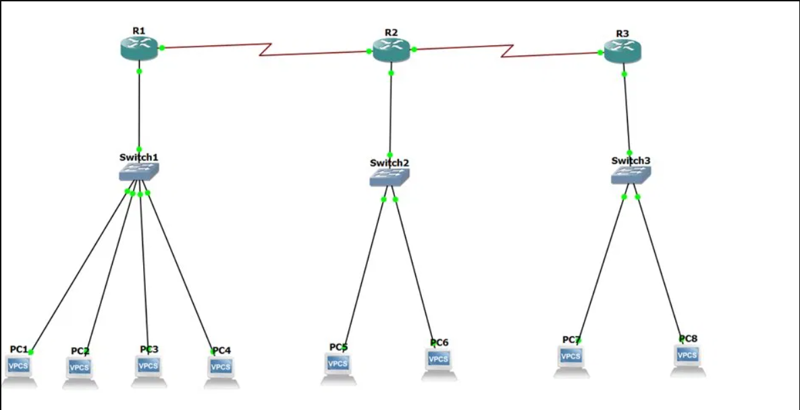
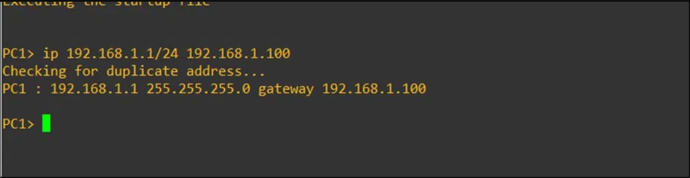
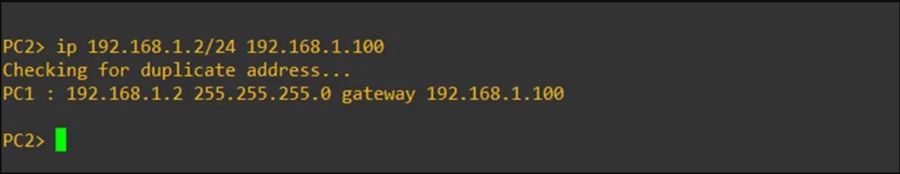
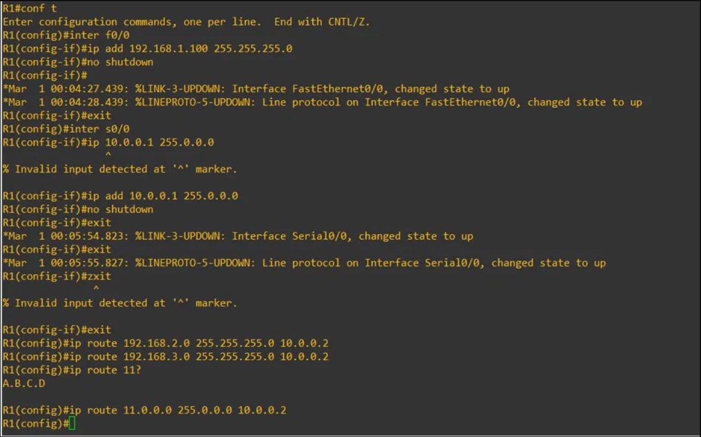
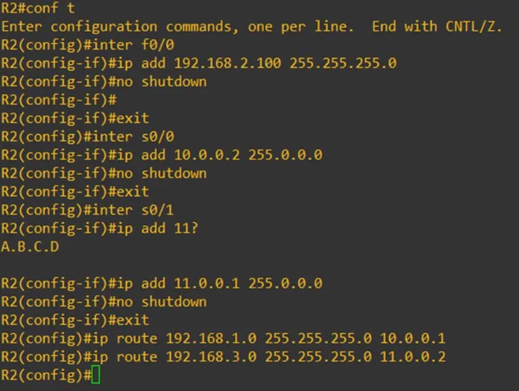
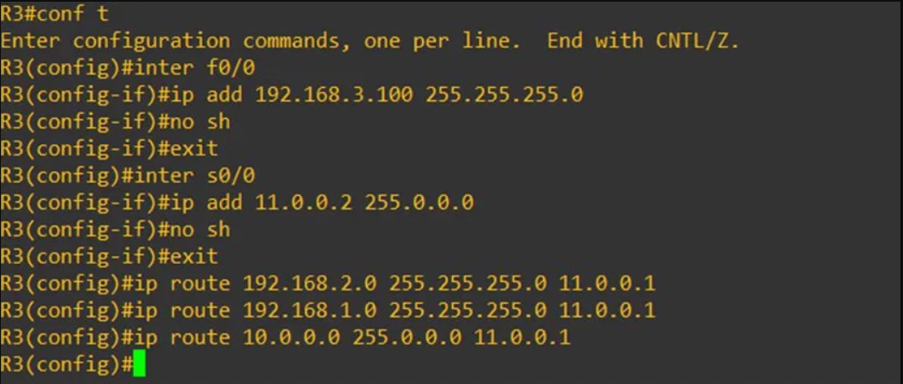
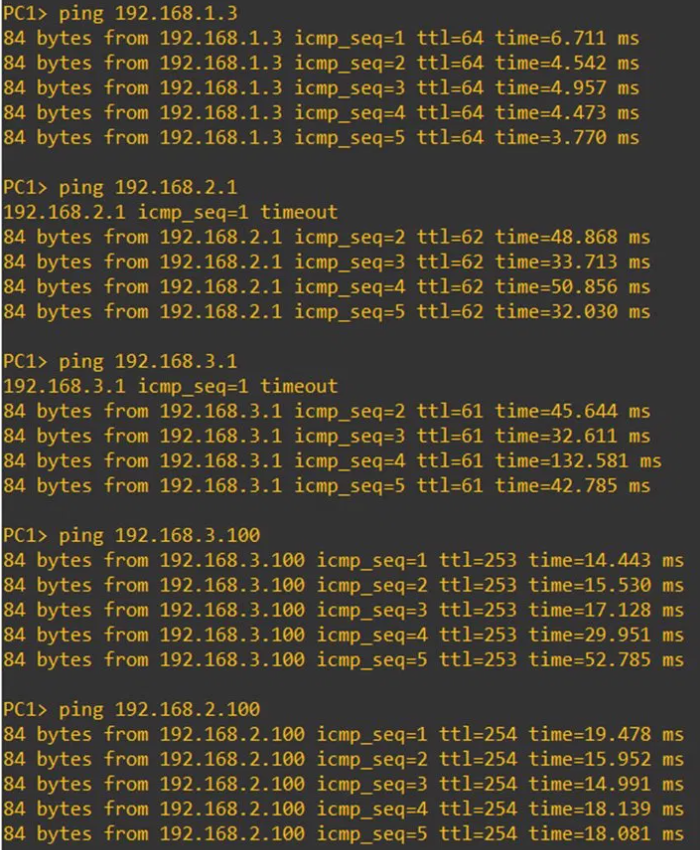

Accueil › Réseau › Routage › Routage Statique
Routage Statique sur GNS3
Objectif
Ce TD a pour but de configurer un routage statique entre plusieurs réseaux interconnectés via des routeurs Cisco dans un environnement simulé GNS3. L'objectif est de comprendre comment les tables de routage sont construites manuellement et comment les paquets sont acheminés d'un réseau à un autre sans protocole de routage dynamique.
Topologie du réseau
1Installation et câblage dans GNS3
Routeur utilisé : c3725 — Switch : Ethernet Switch. Pour avoir des liaisons série (WAN) entre les routeurs, activation des modules dans les slots :
- R1 et R3 → module
WIC-1T - R2 → module
WIC-2T(deux liaisons série)
Démarrage de tous les nœuds via Start/Resume all nodes.

2Configuration des adresses IP des VPCS
Configuration des PC via la console VPCS (format : ip <adresse>/<masque> <passerelle>) :
PC3> ip 192.168.1.3/24 192.168.1.100 PC4> ip 192.168.1.4/24 192.168.1.100 PC5> ip 192.168.2.1/24 192.168.2.100 PC6> ip 192.168.2.2/24 192.168.2.100 PC7> ip 192.168.3.1/24 192.168.3.100 PC8> ip 192.168.3.2/24 192.168.3.100


3Configuration du routeur R1

4Configuration du routeur R2

5Configuration du routeur R3

6Tests de connectivité
Vérification du routage via la commande ping depuis PC1 vers tous les autres PC des différents réseaux.
✅ Ce que j'ai appris
- Comprendre la notion de route statique et de passerelle par défaut
- Configurer des interfaces série et FastEthernet sur un routeur Cisco c3725
- Construire manuellement une table de routage cohérente sur plusieurs routeurs
- Utiliser les modules WIC-1T / WIC-2T pour les liaisons WAN série dans GNS3
- Valider la connectivité inter-réseaux avec
pingetshow ip route